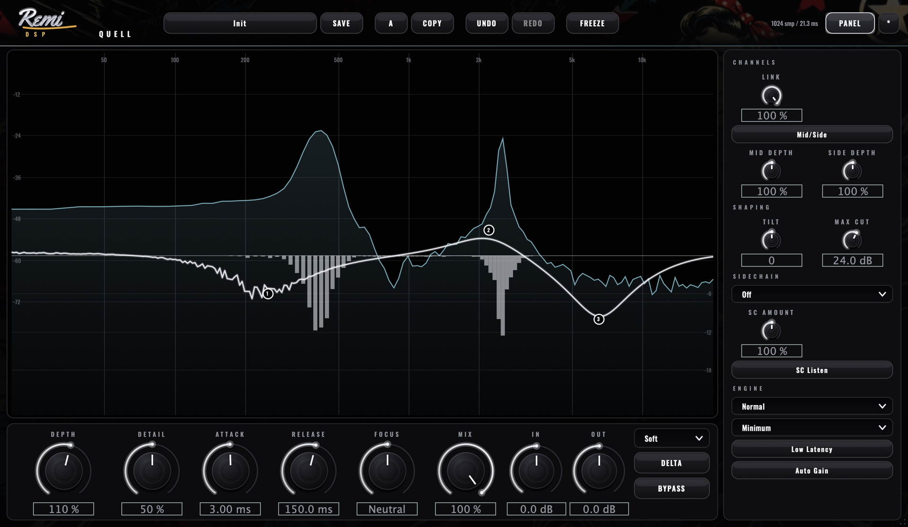
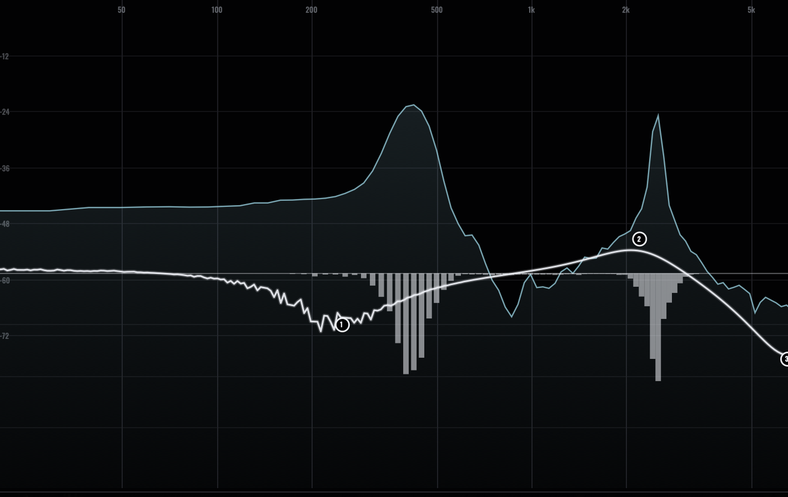

macOS
MACOS 10.15+ · INTEL & APPLE SILICON
Download installerOne installer · App + AU + VST3
REMI DSP · DYNAMIC RESONANCE SUPPRESSION
Quell listens to the spectrum the way your ears do, tells a harsh resonance apart from the sound it belongs to, and drops hundreds of self-tuning dynamic notches exactly where they ring — and only while they ring. Boxiness, harshness and sibilance dissolve; the body of the source stays put.
FREE DOWNLOAD · NO ACCOUNT REQUIRED

REMI DSP · QUELL ENGINE — 44.1–192 kHz
A static EQ notch is always cutting, even when nothing is wrong. Quell maps the spectrum onto an ERB / equal-loudness grid — the same warped scale your hearing uses — estimates what the source is supposed to sound like, and only attenuates the peaks that poke above it. It normalises against the source's own long-term balance, so it chases abnormal resonances instead of any energy over a line. The result is a wide sweet spot and none of the dull, over-smoothed fingerprint.

THE DEPTH CURVE
Turn Depth up and Quell works the whole spectrum. Want it focused? Draw the curve. Up to twenty-four nodes weight the suppression like an inverse EQ — push a band down for more, pull it up to protect it, or drop a notch to fence a region off entirely. Every node carries its own Detail trim, a solo to hear exactly what it's removing, and a sidechain scope.
ERB-spaced bands, equal-loudness weighting and tonal-balance normalisation — a wide sweet spot with no low-end over-treatment and no over-smoothed sound.
A spectral engine in minimum or linear phase across three quality tiers, and a true zero-latency dynamic filter bank for tracking and live use.
Attack and release scale with frequency and shorten on transient-dense material, with per-band hold and hysteresis — no lisping on vocals, no cymbal smear.
Up to 24 nodes weight the suppression like an inverse EQ — bells, shelves, cuts, band-pass and protect notches, each with its own Detail trim, solo and scope.
Detect from an external input, or unmask — carve the vocal's resonant bands out of the instrument bus, scoped to just the region you choose.
A loudness-matched auto-gain for fair A/B, and a phase-accurate delta that nulls perfectly — hear precisely what's being removed. Mid/side up to 9.1.6.
Install, drop it on the harsh track, and turn up Depth. No account required — the full version, every format.
MACOS 10.15+ · INTEL & APPLE SILICON
Download installerOne installer · App + AU + VST3
ONE FREE DOWNLOAD · NO ACCOUNT